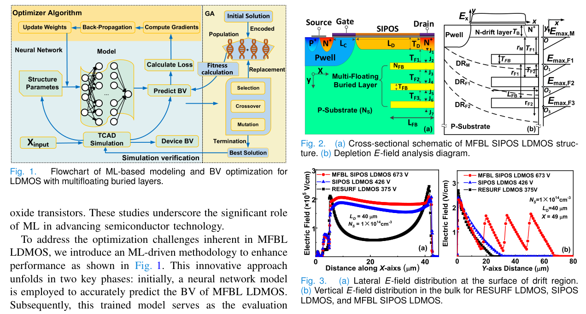
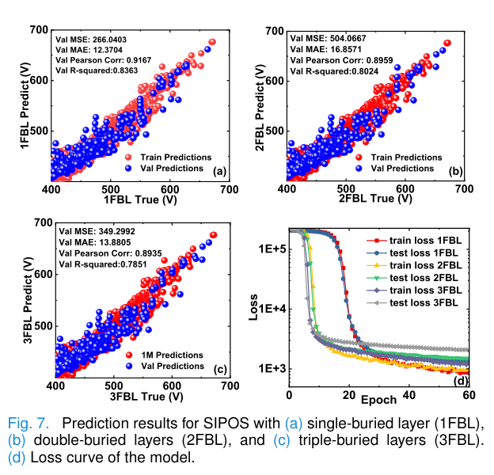

Paper Story · IEEE Transactions on Electron Devices · 2025
ML-assisted LDMOS breakdown optimization
Machine Learning-Based Modeling and BV Optimization for LDMOS With Multifloating Buried Layers
IEEE Transactions on Electron Devices, 72(2), 550-556 (2025)
Research question
MFBL LDMOS has strongly coupled parameters and complex structures, making traditional derivation or manual sweeps inefficient for BV optimization.
Core method
The work generates a TCAD dataset of structural parameters and BV, trains a CNN predictor, uses it as the fitness evaluator in a genetic algorithm, and validates optimized structures with TCAD.
Method steps
- Parameter space
Identify key MFBL LDMOS structural parameters and ranges.
- TCAD dataset
Generate parameter-BV data through simulation.
- CNN surrogate
Train a fast predictor for BV.
- GA search
Search high-BV structures and verify them with TCAD.
Main finding
Parameter search for complex power device structures can be accelerated by TCAD data and ML surrogate models.
Figures


Device Structure and ML Workflow
None · The figure pairs the multiple floating buried-layer LDMOS structure with a TCAD-driven prediction and optimization workflow.
It shows a data loop built around a specific device structure rather than a generic model application.
Source: IEEE Transactions on Electron Devices, 72(2), 550-556 (2025). © 2025 IEEE.
Figure reuse rights pending


Breakdown-Voltage Prediction
None · The plots compare model predictions against TCAD or simulation results.
This validates whether the surrogate model is reliable enough for fast design-space evaluation.
Source: IEEE Transactions on Electron Devices, 72(2), 550-556 (2025). © 2025 IEEE.
Figure reuse rights pending
Why it matters
A surrogate trained on TCAD data supports genetic search, while simulation checks connect parameter exploration with device verification.
Scope and conditions
The key is the closed loop of surrogate modeling, global search, and simulation verification.